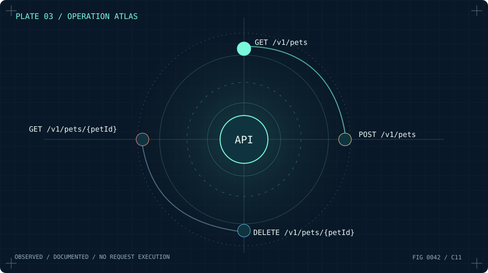

Portable engine
C11 source, CMake builds, data exports and regression tests.
 RESTMORE
RESTMOREMap the unseen. A practical, illustrated expedition from an authorized source to an inspectable API atlas. No speculative endpoints. No invented evidence.
BEGIN THE EXPEDITION ↓ FIG. 01 / THE ENTRY POINT / ARCHITECTURAL STUDY
FIG. 01 / THE ENTRY POINT / ARCHITECTURAL STUDYUse documented sources. Keep the boundaries visible. Preserve the provenance. These five steps reflect the native C11 tool, not an imaginary network scan.
Every expedition begins at the boundary. Enter a URL that points to a service's official HTTPS documentation, or load a local OpenAPI JSON specification.
restmore-cli docs.example.orgThe boundary is not a decorative checkbox. Network access requires explicit permission and both CLI flags. RESTMORE is designed to fetch documentation in a bounded, conservative way rather than executing API methods.
restmore-cli docs.example.org
--execute --authorized --out atlasAn API atlas is not conjured from likely URLs. It is assembled from the operations that a source actually documents. Start with the bundled sample to explore the workflow without a network.
restmore-cli --import examples/openapi-petstore.json --out atlasThe local catalog stores declared routes and provenance references, with a SHA-256 digest calculated from the source document.

PLATE 03 / DOCUMENTED ENDPOINTS / SYNTHETIC SAMPLE

See each operation as a node connected to the central service. The drawing is a visualization of documented data, never proof of all reachable endpoints.
Switch to a scrollable list when details matter more than geometry. Select an operation to reveal its method, path and documentation source.
Every documented operation should have its story attached: route, HTTP method, summary, operation ID and the document it came from. A SHA-256 fingerprint lets you identify the source bytes.
Use the atlas's export functions for downstream review; copied request examples are templates, not network actions.
Native C11 source, a CLI, and a graphical atlas. Desktop HTTPS support is available in the alpha releases; the ARM64 Android APK is an offline test build.
C11 source, CMake builds, data exports and regression tests.
A raylib interface with map and route inspection views.
Document URLs and content hashes alongside declared operations.